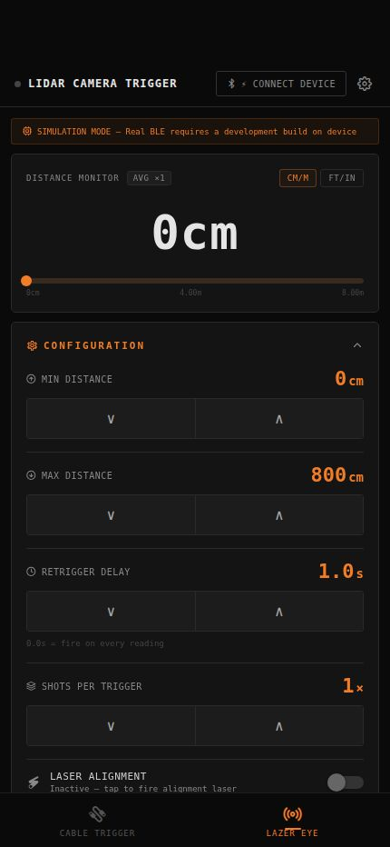
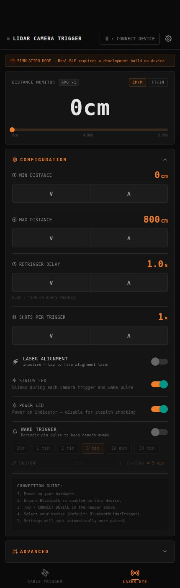
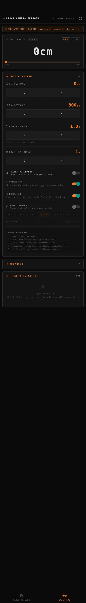

SHP Asset Manager
Lazer Eye
User Manual — V2 Hardware
scotthendersonphotography.net · Updated November 2026
Section 01
System Overview
The Lazer Eye TX is the transmitter unit in the system. Its LiDAR reads the distance to whatever is in front of it and fires your camera shutter when a subject enters a distance window you define — no button press required.
Common uses include wildlife photography when an animal crosses a path, action sports when an athlete reaches a point, product photography, and long-exposure light painting.
Why direct LiDAR sensing?
LiDAR reads subject distance directly. Unlike a reflected laser beam, it does not need a separate reflector across the path. Unlike PIR, it responds to measured distance rather than only heat or movement. Set a near and far boundary so a subject can trigger as it crosses a path or reaches a defined position while objects outside the window are ignored. Results still depend on the subject, surface, alignment, and shooting conditions.
TX capabilities
- App-configurable trigger zone from 0 to 1,000 cm; usable detection range depends on the sensor, subject, and conditions.
- App-controlled shot interval (0–30 seconds), delay before shot (0–5 seconds), and shots per trigger (1–10).
- Direct subject reading with no reflector required.
- Camera wake support, alignment laser, USB-C passthrough charging, and a standard 1/4-20 tripod mount.
- Approximately 20 hours of onboard battery life; safe in rain but not intended for submersion.
RX receiving unit options
An optional RX is the receiving unit at the camera end. It receives trigger and wake signals from the Lazer Eye TX, eliminating the cable run between the TX and camera. The app supports compact and full-size RX builds:
| RX unit | Best for |
|---|
| RX (compact) |
Compact receiving unit. Its technical identifier is LR_MINI_RX_V2; it identifies itself to the app once paired. |
| RX (full-size) |
Full-size receiving unit. Its technical identifier is LR_RX_V2; it provides the same trigger-receive function. |
Trigger output
The TX has a wired trigger output and can also trigger up to four paired RX units wirelessly over ESP-NOW. It can separately link to an Advanced TX or Cable Trigger; those links are described in Sections 07–09.
| Output | What it does | Best for |
|---|
| Wired |
Fires the TX's wired trigger output. |
Direct camera connection at the sensor. |
| ESP-NOW wireless (optional) |
Sends trigger and wake signals to a paired RX. No cable is required between the TX and the camera. |
Remote or awkward placements, water environments, moving rigs. |
Section 02
Connecting to the App
The SHP Asset Manager app connects to a Lazer Eye TX over Bluetooth or WiFi. Advanced TX is a separate Raspberry Pi camera/control unit with its own PI TX tab; it is not another Lazer Eye connection type.

Tap ⚡ CONNECT DEVICE to start pairing
Bluetooth
- Power on the Lazer Eye.
- Ensure Bluetooth is enabled on your phone.
- Open the app and tap the LAZER EYE tab.
- Tap CONNECT DEVICE, choose Bluetooth, and select the Lazer Eye TX from the scan list.
- Settings sync automatically. The dot in the header turns orange when connected.
The app remembers the selected device and may reconnect silently when it is in range. Android 12 and later ask for nearby-device scan/connect permission; Android 10–11 may ask for Location permission for Bluetooth scanning. Allow the requested permissions. The scan list shows the device's advertised name, which can be changed in Settings.
WiFi
The Lazer Eye creates its own WiFi hotspot. WiFi is recommended when installing app or firmware updates — it is significantly faster than Bluetooth.
- Power on the Lazer Eye.
- Join the Lazer Eye's hotspot in phone WiFi settings. If a Security PIN of 8 or more characters is set, use it as the hotspot password; without one, the hotspot is open. The network name follows the device name.
- Return to the app, tap CONNECT DEVICE, choose the Lazer Eye WiFi option, and enter the device's address.
- The usual address is 192.168.4.1, port 80. Tap CONNECT to sync settings.
- Settings sync automatically once connected.
Advanced TX Advanced TX
An Advanced TX is a Raspberry Pi camera/control unit. It is controlled from the app's PI TX tab or its browser panel, separately from the Lazer Eye TX tab. The secured hotspot is recommended for field control: join the network whose name begins with PI_TX_ and connect to 10.42.0.1. Local control needs no internet; an upstream Ethernet or second WiFi connection is optional for internet services.
- Join the Advanced TX hotspot using the password configured during installation.
- Open the app's PI TX tab and connect to 10.42.0.1.
- Use the PI TX tab for the Pi's camera, trigger, wake, receiver, time-lapse, and astronomy controls.
On a trusted upstream LAN, use pi-tx.local or the Pi's LAN IP. Browser access does not require login, so do not expose it to a public or untrusted network. Internet access is needed for Google Drive and software downloads, not local camera control. To pair the Lazer Eye TX directly to Advanced TX over ESP-NOW, see Section 07.
Section 03
Configuration Settings
The CONFIGURATION card contains the trigger zone, shot timing, alignment laser, TX LED switches, wake trigger, and advanced sensor controls. A fresh app profile starts in imperial units with a 30 cm minimum and 366 cm maximum; connected hardware may already have different saved values, which are loaded by the app.

Configuration card — Min/Max Distance, Shot Interval, Shots Per Trigger
Min Distance
0 cm up to Max Distance
The closest range at which the Lazer Eye will trigger. Objects nearer than this are ignored entirely.
Max Distance
Min Distance up to 1,000 cm
The furthest configured range. Actual detection depends on the sensor, subject, and conditions. The highlighted zone on the distance bar shows the active trigger window.
Shot Interval
0.0 s to 30 s; fresh-profile default 0
Minimum time between successive triggers. Set to 0.0 s to fire on every sensor reading. Increase to limit how rapidly the camera fires when a subject lingers in the zone.
Delay Before Shot
0 s to 5 s; fresh-profile default 0
Pauses this long between the detection event and the shutter firing. Use for subjects that are still approaching the ideal frame position when detected. 0 = instant.
Shots Per Trigger
1 to 10; fresh-profile default 1
How many photos are taken each time the trigger fires. 1 for single capture; increase for burst sequences.
Laser Alignment
On / off; turn off manually
Turns on the alignment laser so you can see where the sensor is aimed. It remains on until you turn it off.
Status LED
On / off
Blinks during each camera trigger and wake pulse. Disable in environments where stray light would disturb the shot.
Power LED
On / off
Solid indicator that the Lazer Eye is powered on. Disable for stealth shooting or to minimise light pollution during long exposures.
Trigger and sensor settings are sent to the Lazer Eye TX and retained by the device. The distance display unit is a phone preference. The fresh-profile defaults above apply only before connecting to a device with saved settings.
Do not stare directly into the alignment laser beam.
Reading the distance monitor
- The large number at the top shows the live distance reading.
- The highlighted zone on the bar marks your Min–Max trigger window. A valid reading in this range is eligible to trigger, subject to the shot interval, and the display flashes TRIGGER when a trigger fires.
- Tap CM/M or FT/IN to switch the display unit.
Direct-to-Camera controls
Direct-to-Camera lets the phone connect to a supported camera separately from the Lazer Eye TX trigger output. If the section is hidden, open Settings → HARDWARE SETTINGS → EDIT HARDWARE SETUP and enable DIRECT-TO-CAMERA. Then open the Lazer Eye tab → OPTIONAL FEATURES → DIRECT CAMERA and switch on ENABLE DIRECT-TO-CAMERA.
- Available phone-camera modes are Sony WiFi, Nikon BLE, Nikon WiFi, Canon CCAPI, and experimental Canon BLE.
- For WiFi modes, enter the camera network name and password under CAMERA AP CREDENTIALS. Tap SAVE when disconnected or SAVE & SEND when connected; then tap TEST CONNECTION.
- For BLE modes, put the camera in pairing mode and tap PAIR CAMERA. Use FORGET to remove a saved BLE pairing.
- Tap TEST SHOT to verify the selected mode. A connected Lazer Eye TX is required to send settings and test.
Phone camera settings are saved on the phone. WiFi camera modes pause the RX module while active; BLE camera modes can run alongside an RX. Turning Direct-to-Camera off leaves wired TX and paired RX outputs available. Advanced TX camera sources are separate; see Section 12.
Section 04
Wake Trigger
Many cameras enter a sleep or standby mode after a period of inactivity and miss the first shutter trigger after a long wait. Wake Trigger sends a short periodic pulse to keep your camera awake between triggers.
- Scroll to the WAKE TRIGGER row inside the Configuration card.
- Toggle the switch ON. The label turns orange when active.
- Select a preset interval or enter a custom value.
| Preset | Interval | Recommended for |
|---|
| 30s | 30 seconds | Cameras with very aggressive sleep settings |
| 1 min | 60 seconds | General use — most cameras |
| 2 min | 120 seconds | Cameras with 1–2 min auto-off |
| 5 min | 300 seconds | Long waits — wildlife setups |
| 10 min | 600 seconds | Very long waits |
| 30 min | 1800 seconds | Overnight setups |
| CUSTOM | 1–1800 s | Any specific interval |
Wake Trigger is off in a fresh profile and uses a 30-second interval. When connected, a NEXT PULSE IN countdown appears at the bottom of the card showing when the next wake pulse will fire.
Set the wake interval slightly shorter than your camera's auto-off time. If the camera sleeps after 1 minute, use a 45-second interval.
Section 05
Trigger Schedule
The TRIGGER SCHEDULE card lets you restrict LiDAR triggering to a set time window. The shutter only fires when the current time falls inside your START TIME–END TIME range; detections outside that window are silently ignored.
Setting a time window
- Find the TRIGGER SCHEDULE card in the Lazer Eye tab and expand it.
- Toggle RESTRICT TO TIME WINDOW on. The card label turns orange.
- Enter START TIME and END TIME in 24 h format (
HH:MM). Both fields accept a decimal keyboard — tap the field, type, then tap away to confirm.
Overnight windows
If your End Time is earlier than your Start Time the window is treated as crossing midnight. For example, 22:00–06:00 means “active from 10 pm until 6 am.”
Live status badge
While the schedule is enabled a status banner appears below the time inputs:
| Banner | Meaning |
|---|
| Active — stops at HH:MM | Inside the window. LiDAR triggering is live. |
| Inactive — starts at HH:MM | Outside the window. Triggers are suppressed until the start time. |
Times are based on the phone's local clock (24 h). Connect to the device at least once before leaving it unattended so it receives a time sync from the app.
Section 06
Battery Monitor
Battery Monitor watches the Lazer Eye's battery level in the background and sends a local notification when it drops below your chosen threshold — useful during long unattended shoots.
Enabling the monitor
- In the Lazer Eye tab, expand OPTIONAL FEATURES and open BATTERY MONITOR.
- Turn on LOW BATTERY ALERTS.
- Set the ALERT THRESHOLD slider to the battery percentage at which you want to be notified. The range is 5–50%; the default is 20%.
- If the system asks for notification permission, grant it. The monitor cannot alert you without permission.
The monitor setting and threshold are saved on the phone. Notification permission is required; the app explains how to enable it if permission is denied.
Alert behaviour
- The app alerts once for each TX or RX battery per discharge cycle. It resets after that battery recovers to 5 percentage points above the threshold.
- On iOS, BLE can wake the app for alerts. WiFi checks are periodic in the background; keep the app open for real-time WiFi alerts.
- On Android, BLE and WiFi reconnect while monitoring and a persistent notification remains visible while the monitor is active.
The threshold range is 5–50% in 5-point steps; a fresh profile starts at 20%. Low-battery alerts include both the Lazer Eye TX and a paired RX when their battery reports are available.
Section 07
RX & Advanced TX Links
The RX CONNECTION section lets the Lazer Eye TX trigger up to four paired RX units wirelessly instead of running a cable to the camera. The RX is the receiving unit at the camera end; the TX remains the trigger decision-maker.
Pairing an RX
- Power on the RX and connect the Lazer Eye TX to the app (Bluetooth or WiFi).
- In the Lazer Eye tab, expand RX CONNECTION and enable ESP-NOW.
- Read the RX MAC from its label or Serial MAC command.
- Enter the RX address in the app's PAIR TX MAC field and tap PAIR TX. Despite the field label, enter the receiver's MAC, not the Lazer Eye TX MAC.
- The Lazer Eye registers the receiver and waits for it to receive a trigger or wake packet. Use ADD RX UNIT for each additional receiver, up to four total.
Pairing is remembered by both units and survives power cycles. The PAIRED state and RX details update when a receiver reports over ESP-NOW.
What appears after pairing
- RX TYPE — shows RX (compact) or RX (full-size) once the unit identifies itself. The technical identifiers are retained in troubleshooting details.
- RX FIRMWARE — the receiving unit's firmware version, once reported.
- RX battery icon — shows the RX's battery level, updated whenever it reports a reading wirelessly.
Resetting an RX's pairing
To pair an RX to a different Lazer Eye TX, clear its stored pairing first:
- Power off the RX.
- Hold its BOOT button while applying power, and keep holding for 3 seconds, then release.
- The RX clears its stored pairing and waits for a new first packet from whichever TX pairs to it next.
Linking the Lazer Eye TX to Advanced TX
The ADVANCED TX LINK sends each Lazer Eye detection to the Advanced TX camera over ESP-NOW. It is a separate link from pairing an RX. The Advanced TX bridge is not a camera-end RX.
- Connect the Lazer Eye TX over Bluetooth and connect Advanced TX over WiFi at the same time.
- Open the app's PI TX tab and expand ADVANCED TX LINK. The app fetches the bridge MAC and Lazer Eye TX MAC.
- Tap PAIR. When linked, LiDAR triggers are sent to the Advanced TX camera. Confirm the Pi camera source is connected and ready.
- Use TEST to send a real ESP-NOW trigger. Use UNLINK to remove the link.
The Lazer Eye TX and Advanced TX use their own saved settings and connections. See Sections 11–15 for the Advanced TX browser panel, camera, Drive, time-lapse, and astronomy controls.
Updating bridge firmware from the app Advanced TX
When Advanced TX is connected, the BRIDGE FIRMWARE card appears in the PI TX tab. It updates the ESP-NOW bridge co-processor on the Raspberry Pi wirelessly — no USB cable or terminal access required.
- With the Advanced TX connected, open the PI TX tab and expand BRIDGE FIRMWARE.
- Tap CHECK FOR BRIDGE UPDATES. The app checks the latest bridge firmware release.
- If an update is available, tap UPDATE BRIDGE FIRMWARE. The app sends an OTA request to the Pi, which creates a per-session token for the bridge upload.
- The bridge tears down ESP-NOW, raises a temporary WiFi access point (
LR-BRIDGE-OTA), and the app joins it using the session token as the WPA2 password.
- The app uploads the new firmware. The bridge reboots after flashing and re-announces itself to the Pi — the ESP-NOW card updates within a few seconds.
If no bridge co-processor is attached to the Pi, the card reports ERR_NO_BRIDGE. To abort a bridge OTA mid-transfer, power-cycle the bridge — it boots back to normal operation.
Section 08
Direct Cable Trigger Link
The DIRECT CABLE TRIGGER LINK card pairs the Lazer Eye directly with a Cable Trigger over ESP-NOW. Once paired, every accepted LiDAR detection fires the Cable Trigger wirelessly — even when your phone is put away or out of Bluetooth range.
This feature requires the Lazer Eye firmware v2.9.4 or later for confirmed-delivery status. Earlier firmware versions still send the signal but cannot confirm whether the Cable Trigger received it.
Pairing
- Connect the Cable Trigger to the app over Bluetooth.
- Also connect the Lazer Eye via Bluetooth or WiFi.
- In the Lazer Eye tab, find the DIRECT CABLE TRIGGER LINK card and expand it.
- Under STEP 1 — GET CABLE TRIGGER MAC, tap GET MAC. The app reads the Cable Trigger's ESP-NOW hardware address over BLE and fills in the MAC display automatically.
- Tap PAIR under STEP 2. The Lazer Eye stores the Cable Trigger's MAC and begins sending wireless triggers on every detection.
- The card badge switches to PAIRED and shows the stored MAC address.
Testing the link
Tap TEST LINK to send a test trigger. The result shown depends on firmware version:
- Delivery confirmed — the Cable Trigger acknowledged the test packet. You should have heard a click.
- Sent (delivery not confirmed) — the packet was sent but acknowledgement requires Lazer Eye firmware v2.9.4+. Listen for a click on the Cable Trigger.
- Error — the packet could not be sent. Confirm ESP-NOW is enabled and the devices are within range.
Unpairing
Tap UNPAIR to remove the stored link. The Lazer Eye TX stops sending direct triggers to that Cable Trigger. Pair it again from the app if you want to restore the link.
The direct link is independent of your phone. Once paired you can pocket the phone — the Lazer Eye sends directly to the Cable Trigger over ESP-NOW with no relay required.
Section 09
BLE Cable Trigger Link
The CABLE TRIGGER LINK card provides a BLE-mediated link between the Lazer Eye and the Cable Trigger. When enabled, every accepted LiDAR detection also fires the Cable Trigger via the phone's active BLE connection — no ESP-NOW pairing required, but both devices must stay connected simultaneously.
Enabling the link
- Connect both the Lazer Eye and the Cable Trigger to the app (either via Bluetooth or WiFi).
- In the Lazer Eye tab, find the CABLE TRIGGER LINK card and expand it.
- Toggle FIRE CABLE TRIGGER ON LIDAR EVENT on. The card badge changes to LINKED.
A green status banner confirms both devices are connected. An amber banner appears if the Cable Trigger disconnects — the link will not fire while disconnected.
Behaviour
- The Cable Trigger runs using its saved Pre-Trigger Delay, Exposure Time, and Trigger Engagement Amount.
- If the Cable Trigger is already mid-sequence when a trigger arrives, that event is skipped — not queued. Events are not buffered.
- The link stops automatically when either device disconnects. Toggle the switch again when both reconnect.
For hands-free setups where you want the link to work after putting the phone away, use the Direct Cable Trigger Link (Section 08) instead. For Cable Trigger setup and configuration, see the Cable Trigger manual, Section 09.
Section 10
TX & RX Output Modes
TX OUTPUT controls the Lazer Eye TX's trigger and wake outputs. After an RX has been paired at least once, RX OUTPUT provides independent controls for the receiver.
Trigger output and wake signal
Choose the output mode separately for TRIGGER OUTPUT and WAKE SIGNAL. Dry Contact provides a ground closure and is the default; it works with most camera remote inputs.
| Mode | Use when |
|---|
| Dry Contact |
Default. Works with most camera wake/focus inputs. |
| HOT 3.3V |
Only enable for a camera input that requires a 3.3 V signal. Check the camera's remote/shutter pinout before switching from Dry Contact. |
HOT 3.3V applies voltage instead of a simple contact closure. Confirm your camera's electrical requirements before using it.
Autofocus pre-pulse
Holds the wake/focus pin for a set time before the shutter fires, giving your camera's autofocus a head start on moving subjects.
- Toggle AUTOFOCUS PRE-PULSE (TX OUTPUT) or RX AUTOFOCUS PRE-PULSE (RX OUTPUT) on.
- Set FOCUS HOLD TIME (TX: 50–2000 ms) or RX FOCUS HOLD TIME (RX: 50–5000 ms) to the time your camera needs to lock focus.
- The wake pin is held for that duration, then the shutter fires.
RX Output LEDs
The RX OUTPUT card also has its own STATUS LED and POWER LED toggles for the RX, independent of the Lazer Eye TX's own LED settings in the Configuration card.
RX OUTPUT is unavailable until an RX has been paired at least once. RX output choices are saved on the phone; TX output choices are stored by the Lazer Eye TX.
If a red • Command not confirmed — tap to retry banner appears after changing a Wake Signal mode, the Lazer Eye didn't confirm the change in time and the toggle reverted. Tap the banner to resend, or move closer to the device / switch from Bluetooth to WiFi.
Section 11
Browser Panel Advanced TX
The Advanced TX Raspberry Pi serves a browser control panel to devices on its hotspot or a trusted upstream LAN. It offers live telemetry, trigger and wake controls, ESP-NOW RX pairing, camera settings, Google Drive uploads, time-lapse, and astronomical triggers.
The panel's Camera section mirrors the app's CAMERA card, including the three-way source selector (DSLR, Pi Camera, Webcam), the Pi Camera 3 focus and exposure controls, and the Pi Camera live preview (see Section 12). The live preview is particularly useful from a laptop — it updates at ~1 fps and lets you check framing and focus without touching the phone.
This is useful for monitoring a long shoot from a laptop, controlling the system from a second device, or accessing settings when the phone is not handy. Join the Advanced TX hotspot for local browser control without internet, then open http://10.42.0.1.
Opening the panel
- For offline field control, join the Advanced TX network whose name begins with
PI_TX_. On a trusted upstream LAN, connect your computer to the same private network as the Pi instead.
- Open a browser and navigate to http://10.42.0.1 from the Advanced TX hotspot, or to http://pi-tx.local (mDNS) /
http://<pi-ip-address> from a trusted upstream LAN.
- The browser panel loads without a login.
If pi-tx.local does not resolve, use the Pi's numeric IP address. On most home networks this is shown in your router's DHCP client list, or run hostname -I on the Pi.
The browser panel does not require login. Use it only on a trusted, private network; do not expose it to the public internet or an untrusted LAN.
The browser panel and phone app can both connect to Advanced TX, but do not assume a change made in one appears immediately in the other. Check the displayed setting before starting a shoot.
Section 12
Camera Advanced TX
On the app's PI TX tab, the CAMERA card controls a camera attached to the Advanced TX Raspberry Pi. It is separate from the Lazer Eye TX's wired trigger and paired RX outputs. Choose one of three camera sources with the selector at the top of the card:
| Source | Hardware | Best for |
|---|
| DSLR |
DSLR or mirrorless body on the Pi's USB port (gPhoto2) |
Full image quality and lens control — ISO, aperture, shutter, burst. |
| PI CAMERA |
Raspberry Pi camera module on the CSI ribbon connector |
Compact permanent installs. Pi Camera 3 adds full focus and exposure control. |
| WEBCAM |
Any UVC USB webcam |
Low-cost monitoring and documentation shots. |
Only one source is active at a time. Photos from each source are saved to the Pi's staging directory and can be uploaded to Google Drive (Section 13). Advanced TX camera settings are stored on the Pi.
DSLR / Mirrorless via USB
Any gPhoto2-compatible camera will work. This includes the majority of:
- Canon EOS DSLRs and EOS R mirrorless bodies (PTP/PC mode)
- Nikon DSLR and Z-series bodies
- Sony Alpha cameras with USB PTP support
- Fujifilm X-series bodies
- Olympus / OM System bodies
- Pentax DSLRs
Consult gPhoto2's camera support list at gphoto.org to verify a specific model.
- Set the camera to PTP (Picture Transfer Protocol) mode in its USB connection settings. This is usually called “PC Remote”, “Tethered Shooting”, or “PTP” depending on the brand.
- Connect the camera to the Pi with a USB cable.
- On the PI TX tab, expand CAMERA and tap the DSLR source button. Selecting the source starts searching for the camera.
- The card switches to a searching state. Once the camera is detected, its model name and battery level appear.
Use the left and right arrow pickers to step through the available values for each setting. The Pi reads the choices directly from the camera so only values the camera supports are shown.
| Setting | Description |
|---|
| ISO | Sensor sensitivity. Choices come from the camera's own supported ISO list. |
| APERTURE | Lens aperture (f-number). Only shown for lenses that support electronic aperture control. |
| SHUTTER | Shutter speed. Choices come from the camera's own speed list including Bulb. |
| BURST | Number of frames captured per LiDAR trigger. Range 1–20 shots. |
| AUTOFOCUS DELAY | Toggle on to hold the AF signal for the Focus Hold Time before the shutter fires, giving the camera time to lock focus. |
Tap TEST SHUTTER to fire one frame immediately and verify the connection is working.
Settings are saved to the Pi and restored automatically the next time the same camera model is connected. If the camera does not appear after plugging in, confirm it is set to PTP mode and not “mass storage” or “charging only”.
Pi Camera (CSI ribbon)
A Raspberry Pi camera module plugged into the Pi's CSI ribbon connector can be triggered directly — no USB cable or external camera body needed. The camera must be connected before the Pi boots and enabled on the Pi (camera support is on by default in current Raspberry Pi OS; on older images enable it via sudo raspi-config → Interface Options).
- In PI TX → CAMERA, tap the PI CAMERA source button. Selecting the source searches for the camera module; a green dot on the button confirms it is connected.
- Once detected, the module's sensor model appears (e.g.
imx708 for a Pi Camera 3).
- Choose a capture resolution with the RESOLUTION picker (1080p or 4K).
On camera modules older than the Pi Camera 3 (fixed-focus modules such as the v1, v2, and HQ camera with manual lenses), capture runs with automatic exposure and no focus control — the card shows the resolution picker only.
Live preview
Once the Pi Camera source is connected, a live preview appears automatically in the CAMERA card — both in the phone app and in the browser panel. It refreshes at approximately 1 frame per second and is useful for checking framing and confirming focus before a shoot or a time-lapse run.
- The preview runs independently of captures. Taking a test shot or LiDAR-triggered shot does not interrupt it.
- The preview stream is always 640×360 regardless of the capture resolution you have selected. It is a separate low-resolution pipeline on the Pi and has no effect on capture quality.
- A “Preview loading…” message is shown while the first frame arrives — this is normal and takes a moment after switching to the Pi Camera source.
Direct browser access: the preview is also available as a still JPEG at any time by opening http://pi-tx.local/preview.jpg (or http://<pi-ip>/preview.jpg) in any browser on your network. Refreshing the page fetches a new frame. This URL works in any modern browser and is convenient for a quick focus check from a laptop without opening the full browser panel.
The preview only streams while the Pi Camera source is active. If you switch to DSLR or Webcam, /preview.jpg returns a 404 until you switch back to Pi Camera.
At 1 fps the preview uses very little bandwidth — typically under 50 KB/s. It can run simultaneously with a time-lapse or Drive upload without affecting those operations.
Pi Camera 3 controls
When the connected module is a Pi Camera 3 (Sony IMX708 sensor), the card automatically expands with focus, exposure, and white balance controls. These controls only appear on the Camera 3 — the Pi detects the sensor model at connect time.
Focus
CONT / AUTO / MANUAL
CONT (continuous) refocuses constantly — best for moving subjects. AUTO focuses once on demand using the TRIGGER AUTOFOCUS button. MANUAL locks the lens at a position you set.
Trigger Autofocus
AUTO focus mode only
Runs a one-shot focus cycle. The button shows FOCUSING… while the cycle runs, then FOCUS LOCKED or FOCUS FAILED. If no result arrives within about 5 seconds the button resets and you can try again. Tap again to refocus at any time.
Lens Pos
MANUAL focus mode only — ∞ to ~10 cm
Steps the lens position directly. The readout shows the approximate focus distance (∞ at one end, closer distances in cm as you step up). Take a test shot to confirm focus on a fixed subject.
Exposure
AUTO / MANUAL
A single mode switch for the exposure system. AUTO lets the camera meter both shutter and gain. MANUAL reveals the Shutter and Gain controls below — both are fixed together, because the sensor cannot mix an automatic shutter with a manual gain (or vice versa).
Shutter
1 ms to 10,000 ms
Manual exposure time in milliseconds. When you first switch Exposure to MANUAL, the current metered values are carried over as the starting point, so the image brightness does not jump.
Gain
1× to 16× (≈ ISO 100–1600)
Manual analogue sensor gain. This is not a true ISO value — multiply by 100 for the approximate ISO equivalent shown next to the stepper. Higher gain brightens the image at the cost of noise.
White Bal
AUTO / presets
Auto white balance, or a fixed preset: Daylight, Cloudy, Tungsten, Fluorescent, or Indoor. Use a preset for consistent colour across a time-lapse.
All Camera 3 settings are stored on the Pi and reapplied automatically when the camera reconnects — including after a resolution change or Pi reboot.
USB Webcam
Any standard UVC USB webcam can be used as a capture source. No drivers or configuration are needed on the Pi — the webcam is detected automatically.
- Plug the webcam into any of the Pi's USB ports.
- In PI TX → CAMERA, tap the WEBCAM source button. Selecting the source searches for the webcam.
- Once detected, the webcam's model name appears.
- Choose a capture resolution with the RESOLUTION picker (720p or 1080p). If the webcam does not support the exact resolution, it captures at the closest mode it does support.
Webcam capture runs with the webcam's own automatic exposure. Photos are staged and uploaded exactly like DSLR and Pi Camera shots.
Section 13
Google Drive Upload Advanced TX
The GOOGLE DRIVE card lets the Advanced TX upload photos captured by any camera source (DSLR, Pi Camera, or webcam) directly to your Google Drive. Authorization uses Google's device-flow, so no browser redirect to the Raspberry Pi is needed — you approve access on any device.
Step 1 — Enter OAuth credentials
The Pi needs a Google OAuth 2.0 Client ID and Secret before it can request authorization. These are free to create:
- Go to console.cloud.google.com, create (or select) a project, and enable the Google Drive API under APIs & Services → Library.
- Go to APIs & Services → Credentials → Create Credentials → OAuth 2.0 Client ID. For Application type choose TVs and Limited Input devices.
- Copy the Client ID and Client Secret shown.
- In the app, expand the GOOGLE DRIVE card, paste the Client ID and Client Secret into the fields, and tap SAVE TO PI. The Pi stores them securely on its SD card.
Step 2 — Authorize with Google
- Tap AUTHORIZE WITH GOOGLE. The Pi starts a device-flow authorization and returns a URL and a short code.
- Open the URL on any phone or computer browser, sign in to your Google account, and enter the code shown in the app. Tap the COPY URL and COPY CODE buttons to copy each to the clipboard.
- After approving, return to the app and tap ALREADY APPROVED? CHECK STATUS. The Pi confirms authorization and shows your account email.
The Pi saves the authorization token to its SD card. You only need to authorize once — the token is refreshed automatically and survives Pi reboots.
Uploading photos
Once authorized, the upload controls appear:
- FOLDER — type a folder name and tap SET. The Advanced TX creates this folder in your Drive root if it does not exist. Defaults to “Advanced TX Photos”.
- UPLOAD LAST 50 — uploads the 50 most recently captured files from the Pi's staging directory.
- UPLOAD ALL NEW — uploads every file in the staging directory that has not been uploaded before.
A progress bar shows done / total during an active upload. Any errors (network loss, Drive quota) appear below the bar.
Section 14
Time-Lapse Advanced TX
The TIME-LAPSE card programs the Advanced TX to fire the camera at a fixed interval for a set duration, automatically — no phone interaction required once started. The time-lapse engine uses all currently configured camera settings (ISO, aperture, shutter, burst).
Configuring a sequence
| Field | Description |
|---|
| INTERVAL | Seconds between successive triggers. Minimum 1 second. |
| DURATION | Total run time entered as hours + minutes. The sequence ends automatically when this time elapses. |
Starting and stopping
- Set INTERVAL and DURATION, then tap START TIME-LAPSE.
- The card switches to the running view, showing a shot counter and remaining time with a progress bar.
- To end the sequence early, tap STOP TIME-LAPSE. The Pi stops firing immediately and the card returns to the configuration view.
The Pi keeps the time-lapse running even if the phone disconnects mid-sequence. Reconnect at any time to check progress or stop it early.
Section 15
Astronomical Triggers Advanced TX
The ASTRONOMICAL TRIGGERS card programs the Advanced TX to start a time-lapse session automatically at a calculated solar or lunar event — sunrise, sunset, moonrise, moonset, golden hour, or blue hour. Triggers survive Raspberry Pi reboots and run daily without any further phone interaction.
Step 1 — Set the Pi's location
Astronomical times are calculated for a specific latitude and longitude. Enter the coordinates manually or use the phone's GPS:
- Tap USE CURRENT LOCATION to fill the fields from the phone's GPS automatically. Grant location permission if prompted.
- Alternatively, type a latitude and longitude directly into the fields and tap SET.
Once a location is set, the Pi calculates today's event times and displays them in the TODAY'S EVENTS list below the location fields.
Event types
| Event | Description |
|---|
| SUNRISE | Moment the upper limb of the sun appears above the horizon. |
| SUNSET | Moment the upper limb of the sun disappears below the horizon. |
| MOONRISE | Moment the moon rises above the horizon. |
| MOONSET | Moment the moon sets below the horizon. |
| GOLDEN HOUR START | Start of the golden hour — warm, low-angle light after sunrise or before sunset. |
| GOLDEN HOUR END | End of the golden hour — typically when the sun is 6° above the horizon. |
| BLUE HOUR START | Start of the blue hour — the twilight period with cool blue ambient light. |
| BLUE HOUR END | End of the blue hour — when civil twilight ends and the sky darkens fully. |
Step 2 — Add a trigger
- In the ADD TRIGGER section, tap an event button to select it.
- Set OFFSET in minutes. Positive values fire after the event; negative values fire before it. For example, −15 starts the sequence 15 minutes before sunrise.
- Set DURATION (hours + minutes) — how long the time-lapse session should run.
- Set INTERVAL (seconds) — time between shots during the session.
- Tap ADD [EVENT] TRIGGER. The trigger appears in the ACTIVE TRIGGERS list.
Managing active triggers
- Each entry in ACTIVE TRIGGERS shows the event name, offset, duration, and interval.
- Tap the 🗑 delete icon on any entry to remove that trigger.
- Tap CLEAR ALL to remove every scheduled trigger at once.
Astronomical triggers are stored on the Pi and run daily. You do not need to keep the app open or the phone connected. Event times are recalculated each day using the stored location.
If a moonrise or moonset event does not occur on a given day (the moon is up all day or down all day at the set latitude), the Pi skips that day's instance automatically.
Section 16
Advanced Sensor Adjustments
On the Lazer Eye TX tab, expand ADVANCED. Most users can leave these controls at their fresh-profile defaults; connected devices can have different saved values.

ADVANCED — tap to expand sensor controls
Scan Rate
10–500 Hz, fresh-profile default 300 Hz
How many distance readings per second the sensor takes. Higher values make the system more responsive to fast-moving subjects but draw more power.
Pulse Speed
50–2000 ms, fresh-profile default 250 ms
How long the trigger output is held active per shot. Increase if the camera misses short triggers.
Smoothing
1–10, fresh-profile default 4
Averages recent readings before evaluating the trigger. Higher values smooth out readings over longer distances and reduce false triggers, at the cost of slightly more latency.
Flux Gate
Off or 5–200, fresh-profile default 10
Rejects low-confidence readings (weak signal returns), which filters phantom distance spikes from fast-moving subjects crossing the beam edge or reflective surfaces. Increase if you see false triggers; lower it or turn it off if the sensor stops detecting low-reflectivity subjects (e.g. dark clothing).
Section 17
Status LEDs & Battery
Lazer Eye LEDs
| LED | Behaviour | Meaning |
|---|
| Status LED |
Single blink |
A trigger or wake pulse just fired. Toggle STATUS LED in the Lazer Eye TX configuration. |
| Power LED |
Solid on |
Device is powered on and running. Toggle POWER LED in the Lazer Eye TX configuration. |
RX LEDs
RX STATUS LED and POWER LED are controlled independently in the RX OUTPUT section after a receiver has been paired. These choices are saved on the phone; the Lazer Eye TX's LED choices are stored on the TX.
Battery
The Lazer Eye TX's battery percentage appears as a battery icon in the app header when connected. Once an RX is paired and reporting, its battery level appears next to the TX battery icon in the ESP-NOW card.
Charge devices via their USB-C ports using any standard 5 V USB charger.
Section 18
Troubleshooting
False triggers when nothing is in frame
Increase FLUX GATE gradually under ADVANCED; a fresh profile starts at 10. The sensor may be catching weak or mixed reflections from a background or shiny surface.
Sensor stops detecting subjects
Lower the Flux Gate value, or turn it off. It may be set too strict for dark or matte subjects (e.g. black clothing). Also confirm the Min–Max trigger zone covers the subject's position using the live distance monitor.
Camera misses the first shot after a long wait
Enable Wake Trigger at an interval slightly shorter than your camera's auto-off time. If the camera sleeps after 1 minute, use a 45-second interval.
Camera fires too late or too early relative to the subject
Adjust Delay Before Shot in Configuration to fine-tune the pause between detection and the shutter firing.
Camera misses short triggers
Increase PULSE SPEED under ADVANCED. Some camera bodies require a longer signal to reliably register a shutter command.
Camera doesn't focus in time before the shot
Enable Autofocus Pre-Pulse in TX OUTPUT (or RX OUTPUT) and increase the Focus Hold Time until the camera locks focus reliably before the shutter fires.
A red "Command not confirmed" banner appears after changing a Wake Signal mode
The command was sent but the device did not confirm it in time — the toggle reverted to the last known good state. Tap the banner to resend. If it reappears repeatedly, move closer to the device or switch from Bluetooth to WiFi.
RX type or firmware shows blank after pairing
Power-cycle the RX. On boot it reports its type and firmware version to the Lazer Eye TX; the app displays the correct values within a few seconds of the RX coming online.
ESP-NOW shows NOT PAIRED
Make sure the RX is powered on and the ESP-NOW toggle is on. Re-enter the RX's MAC address in PAIR TX MAC and tap PAIR TX again. If it was previously paired to a different TX, reset its pairing first (see Section 07).
Can't connect via Bluetooth
Toggle Bluetooth off and on and power-cycle the Lazer Eye TX. Confirm Bluetooth permission for SHP Asset Manager in the phone's app settings. On Android, allow the nearby-device permissions on Android 12+ or Location permission on Android 10–11. The scan list uses the device's current name, which may have been changed in Settings.
Advanced TX not found / pi-tx.local does not resolve
For offline control, confirm the phone is joined to the Advanced TX network whose name begins with PI_TX_ and retry 10.42.0.1. On a trusted upstream LAN, confirm the Raspberry Pi and phone are on the same private network. If mDNS is unavailable on that LAN (some mesh routers block it), use the Pi's numeric IP address instead. Find it by running hostname -I on the Pi, or check the router's DHCP client list.
Trigger Schedule is blocking shots unexpectedly
Check the phone's local time, then reconnect so the app can sync time to the Lazer Eye TX. For an overnight window such as 22:00–06:00, the start time must be later than the end time.
Battery Monitor alert never arrives
Confirm notification permission is granted and the monitor is enabled under OPTIONAL FEATURES → BATTERY MONITOR. On iOS, BLE can wake the app; WiFi alerts are periodic in the background, so keep the app open for real-time WiFi alerts. On Android, keep the monitor's persistent notification active.
Direct Camera cannot find or reconnect to the camera
For WiFi, confirm the camera is in the selected WiFi mode, the phone is on the camera's network, and the saved SSID/password are correct. For BLE, put the camera in pairing mode and tap PAIR CAMERA; if it still fails, use FORGET and pair again. Reopen DIRECT CAMERA to check the connection status.
Direct Cable Trigger Link shows "delivery not confirmed"
Update the Lazer Eye TX to firmware v2.9.4 or later for receipt confirmation. Older firmware may send the trigger without confirming delivery. Check that ESP-NOW is enabled, both devices are powered, and they are within reliable radio range; walls and interference can reduce range.
BLE Cable Trigger Link fires inconsistently
Both the Lazer Eye TX and Cable Trigger must remain connected to the app simultaneously. Events are not queued — if the Cable Trigger is mid-sequence when a trigger arrives, that event is skipped. For a hands-free setup that works when the phone is away, use the Direct Cable Trigger Link (Section 08) instead.
DSLR / mirrorless not detected after plugging in
Confirm the camera is set to PTP mode (not Mass Storage, Charging Only, or MTP). On Canon, this is usually labelled “PC Remote”; on Nikon, “PTP”; on Sony, “PC Remote”. Power-cycle the camera after switching modes. Also check the USB cable — some cables are charge-only and carry no data.
Pi Camera not detected after selecting the PI CAMERA source
Power off the Pi and re-seat both ends of the CSI ribbon cable — the contacts must face the correct direction (check the connector markings) and the retaining clips must be fully closed. The camera is only detected at boot, so reboot after re-seating. On older Raspberry Pi OS images, also confirm the camera interface is enabled via sudo raspi-config → Interface Options. Verify detection on the Pi with libcamera-hello --list-cameras.
Pi Camera focus / exposure controls do not appear
The extended controls only appear on a Pi Camera 3 (IMX708 sensor) — check the model name shown after activation. Older modules (v1, v2, HQ) are fixed-focus with automatic exposure and show the resolution picker only. If you have a Camera 3 but the model shows differently, re-seat the ribbon cable and reboot the Pi.
Webcam not found after plugging in
Confirm the webcam is a standard UVC device — run lsusb on the Pi to check it enumerates, and ls /dev/video* to confirm a video device exists. Try a different USB port, and avoid unpowered USB hubs, which can brown out the webcam. Tap the WEBCAM source button again after re-plugging.
Google Drive authorization fails or CHECK STATUS returns an error
Confirm the Google Cloud project has the Google Drive API enabled (not just the credentials created). Also verify the OAuth application type is TVs and Limited Input devices — other application types do not support the device code flow the Pi uses. If the code has expired, tap AUTHORIZE WITH GOOGLE again to start a fresh flow.
Time-lapse stops before the set duration
Check available storage on the Pi's SD card. If the staging directory fills up the engine halts to avoid data loss. Also confirm the USB camera stays in PTP mode and does not auto-switch to mass storage after an idle period — some cameras do this when untouched for several minutes.
Astronomical trigger does not fire at the expected time
Confirm the Pi's system clock is correct (timedatectl on the Pi). Astronomical event times are calculated in UTC and converted to local time using the Pi's timezone — set it with sudo timedatectl set-timezone <region/city>. Also verify the location coordinates are correct; a wrong hemisphere or sign will shift all events significantly.
Bridge firmware update fails or hangs mid-transfer
If the transfer stalls, power-cycle the bridge co-processor and retry from BRIDGE FIRMWARE. Keep the phone connected to the temporary LR-BRIDGE-OTA network until upload completes; switching networks interrupts the transfer.
An update is slow or failing
Use WiFi for a faster transfer. In the app open Settings → HARDWARE SETTINGS → FIRMWARE UPDATE (OTA), then tap CHECK FOR UPDATES or use DOWNLOAD FOR WIFI and INSTALL VIA WIFI — INSTANT. The device hotspot itself has no internet, so download the release before joining it.
Updating firmware
- Connect to the Lazer Eye in the app.
- Open Settings → HARDWARE SETTINGS → FIRMWARE UPDATE (OTA).
- Tap CHECK FOR UPDATES. If a release is available, download it with DOWNLOAD FOR WIFI if needed.
- Install over Bluetooth, or join the device hotspot and choose INSTALL VIA WIFI — INSTANT. You can also install a local firmware file with PICK .BIN FILE.
- Keep power connected and do not interrupt the transfer. The TX reboots and the app attempts to reconnect after a successful update.